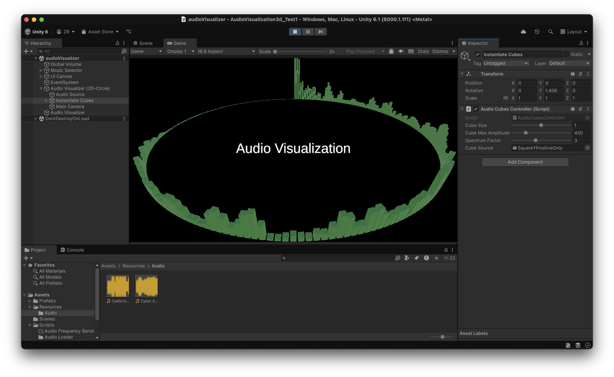
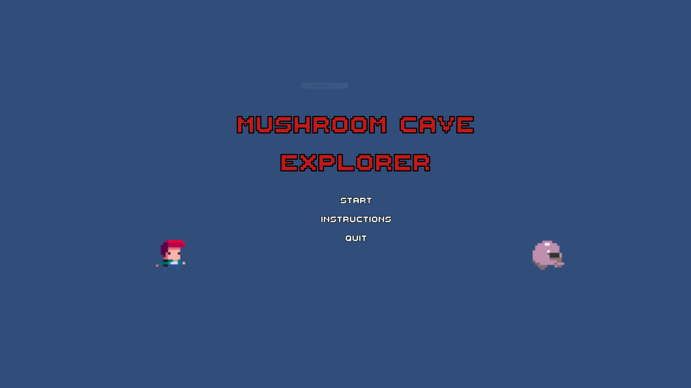
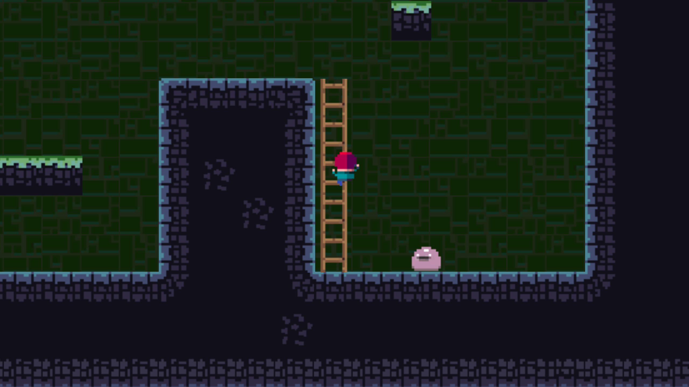

Zackary Rauzi

About:
I'm a computer science student at SFSU. Before SFSU I earned an associates in Film/Electronic Media.
In my spare time I like to make websites and build games in Unity. I also love to travel and spearfish.
Skills:
Languages:
Java, C# (Unity Monobehavior), Javascript, HTML/CSS, Python
Technologies:
VS Code, Github, Photoshop, Premeir Pro, Unity
Other:
Typescript, Node, Express, Mongodb, PostgresSQL
Projects:
Audio Visualization Project

This is a small project I made in unity. I found Unity has a built in method AudioSource.GetSpectrumData, which will return an array of audio spectrum values based on an input audio track.
I thought this could be a cool feature to implement in a game in the future, so I created this project to familiarize myself with the data provided by the GetSpectrumData method.
Cubes are spawned in a circle, and every frame they are updated to match their corresponding array data. This creates a cool vizualiation effect. I also added modifiers so I can adjust the cube size, amplitude, and how many are spawned.
"Dragos Journey" - Monster Catching Game


This is a game I made in Unity as a final project for my game design course. I created a platformer with wasd movement and a jump. The player can also interact with the environment.
There are mushrooms, which provide a jump boost, and ladders to go up and down. There are also monsters, that cause the player to start at the begining of the level upon being hit.